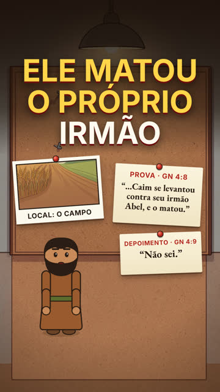
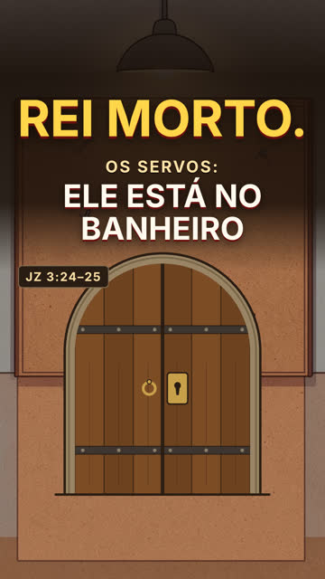

Uma faz o vídeo do zero. A outra corta os melhores momentos das lives. Você só aprova.


Você escreve a ideia. Ela faz roteiro, voz, cenas e montagem e entrega o vídeo vertical pronto para você aprovar.
Acha streamers, vigia as lives e corta sozinho os picos de chat e de som em vídeo vertical com legenda. Você aprova o que vai pro ar.